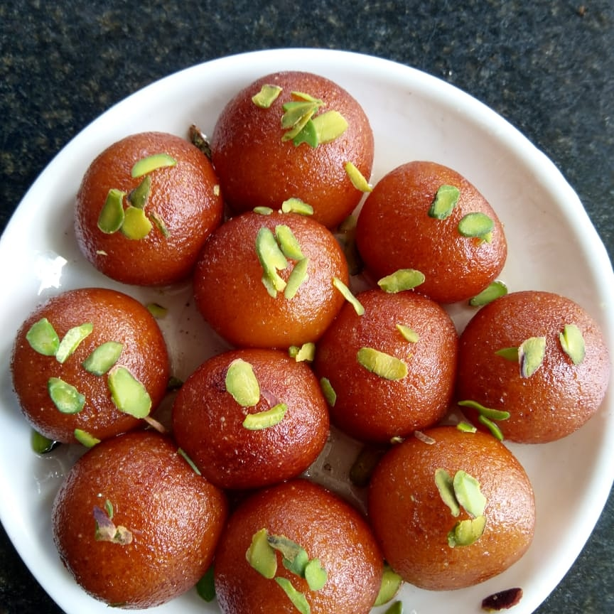

Gulab Jamun

Description
Gulab Jamun is one of India’s most beloved desserts — soft,
melt-in-your-mouth balls soaked in a fragrant rose-flavored sugar syrup.
Made from milk solids (khoya or milk powder) and a hint of cardamom, these
golden dumplings are deep-fried slowly until they turn a rich caramel
brown, then immersed in warm syrup infused with rose water and saffron.
The result is a dessert that’s delicately sweet, aromatic, and comforting
in every bite. Whether served warm or chilled, Gulab Jamun is a festive
favorite that brings a touch of celebration to every occasion — from
weddings to family gatherings.
Ingredients
- 1 cup milk powder
- ¼ cup all-purpose flour (maida)
- ¼ teaspoon baking soda
- 2 tablespoons ghee (clarified butter)
- 2‐3 tablespoons milk (or as needed to form a soft dough)
- Oil or ghee, for deep frying
- 1 ½ cups sugar
- 1 ½ cups water
- ½ teaspoon cardamom powder
- 1 teaspoon rose water (optional, for aroma)
- A few saffron strands (optional, for flavor and color)
- Chopped pistachios or almonds
Steps
-
In a saucepan, combine 1 ½ cups sugar and 1 ½ cups water. Heat on medium
flame, stirring until the sugar dissolves completely. Add cardamom
powder, rose water, and saffron strands (if using). Let it simmer for
5–7 minutes until slightly sticky but not thick. Turn off the heat and
keep the syrup warm.
-
In a mixing bowl, combine milk powder, all-purpose flour, and baking
soda. Add ghee and mix gently with your fingers until the mixture
becomes crumbly. Gradually add milk — one tablespoon at a time — and
knead lightly to form a soft, smooth, and slightly sticky dough.
-
Divide the dough into small equal portions and roll them into smooth,
crack-free balls.
-
Heat oil or ghee in a deep pan over low to medium heat. Drop a small
piece of dough to test — it should rise slowly without browning too
fast. Gently add the dough balls and fry, stirring continuously, until
they turn evenly golden brown. Remove and drain on paper towels.
-
Immediately transfer the hot fried jamuns into the warm sugar syrup. Let
them soak for at least 1–2 hours, allowing them to absorb the syrup and
become soft and juicy.
-
Garnish with chopped pistachios or almonds. Serve warm or chilled — both
ways are irresistibly delicious!
Image credit:
"Gulab Jamun made with khoya" by
Patelaahil, licensed under
CC BY-SA 4.0.
Home